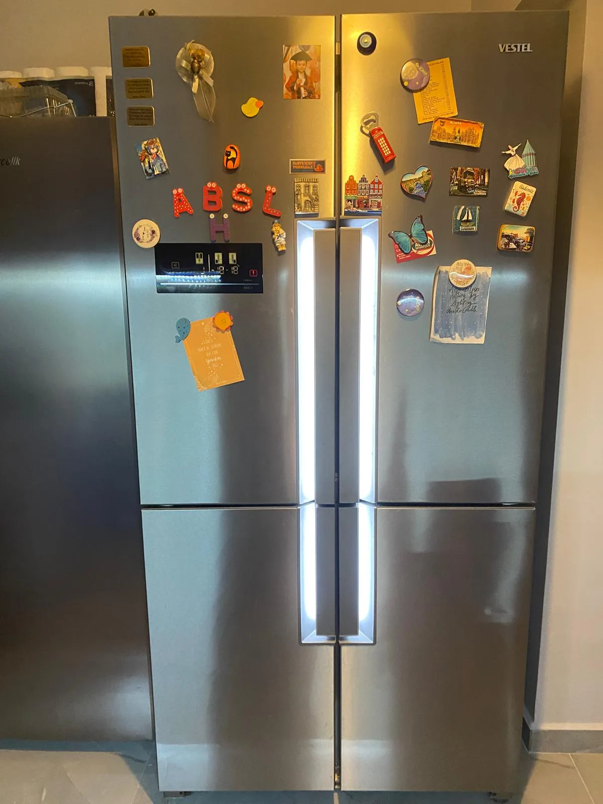
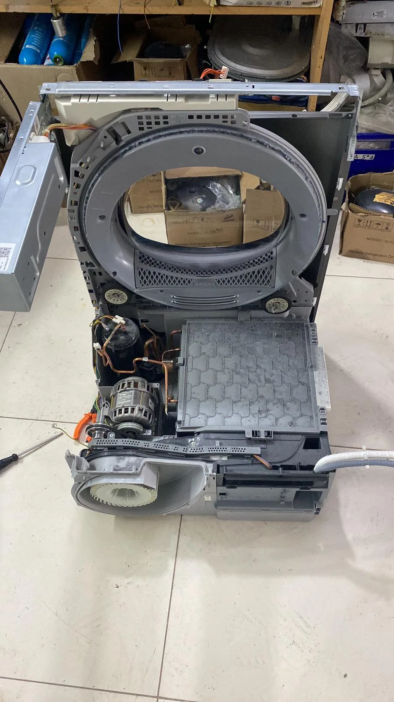
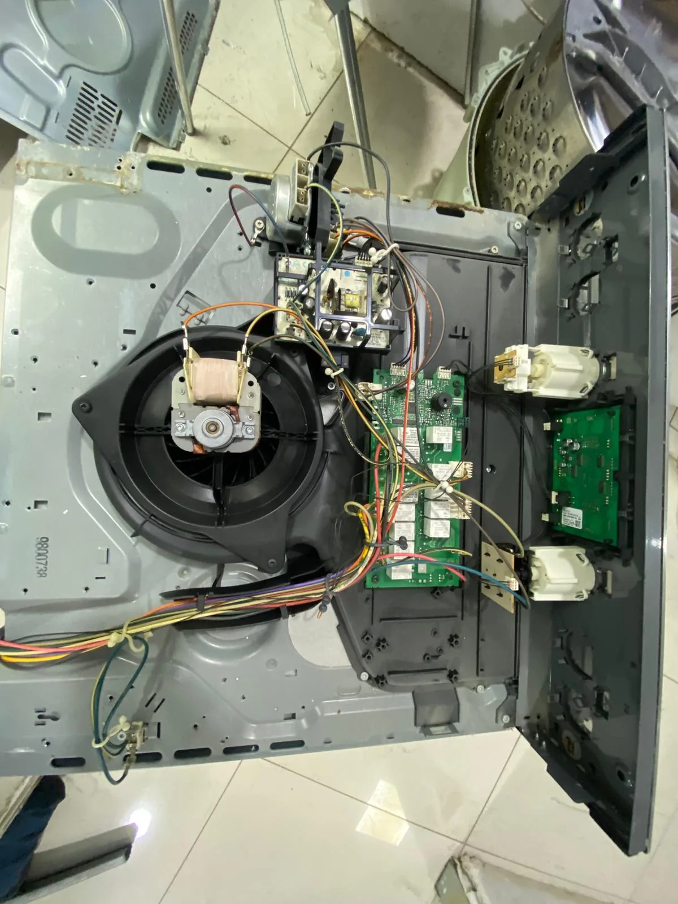

Google★★★★★
“They came within two hours on the same day for a refrigerator repair. They did a very clean job, and it cost almost half of what another repairer had quoted us. They did not try to overcharge us either. We were very satisfied.”
Talha A.
We are an independent local technical service for home appliances, helping residents and international customers communicate their appliance problems clearly in English.

Dr. Beyaz Eşya Servisi provides independent technical service and repair support for household appliances around Pendik, Kurtköy, Tuzla and Kartal. We work with customers who need practical help with refrigerators, washing machines, dishwashers, dryers, freezers, ovens, air conditioners and boilers.
If Turkish is not your first language, you can contact us in English by phone or WhatsApp. Simply send us the appliance type, brand, model and a short description of the problem. Photos or a short video of the fault can also help us understand the situation before the visit.
A simple process for customers who want to explain their appliance problem in English.
Send the appliance type, brand, model and fault symptoms by phone or WhatsApp.
We clarify the reported problem and discuss the next step with you.
The appliance can be checked at the service location or during an on-site visit, depending on the request.
After the fault is assessed, the appropriate repair or technical support is discussed.
These are English translations of customer reviews originally posted in Turkish on our Google Business Profile.
“They came within two hours on the same day for a refrigerator repair. They did a very clean job, and it cost almost half of what another repairer had quoted us. They did not try to overcharge us either. We were very satisfied.”
“I was genuinely very satisfied. The technician was attentive, friendly and highly skilled. When I explained the problem, he came without keeping me waiting and repaired it in a short time. A technician who works carefully and someone you can trust. I definitely recommend him.”
“Our washing machine and refrigerator had problems. When we called the service, they came quickly the next day. They were friendly and professional, and they did their work very carefully. Thank you from our whole family.”
“They repaired my broken washing machine in just half an hour. Emirhan was very friendly and sincere.”
“I was looking for a good repairer and contacted them after trusting the reviews. They arrived at the time they said they would and repaired the oven. They really are reliable people, just as the reviews described. I recommend them to everyone.”
“Thank you for your hard work. They did a very good and very clean job. I had called two other technicians before, but they repaired the machine that could not be fixed previously. I am using it without any problems.”
“Their service is very fast. They arrive on the day and at the time they say they will. We were very satisfied, and we also bought a washing machine. Thank you to everyone involved for their effort.”
“The service was fast and the workmanship was very good. They solve the problem quickly. They are friendly people. I recommend them to everyone.”
These customer reviews were originally published in Turkish on our Google Business Profile. The text above is an English translation. Read the original reviews on Google →
We visit customers in Pendik, Kurtköy, Tuzla and Kartal. Choose your area for service details, or share your neighbourhood with us in English to confirm an appointment.

Cooling, overheating, leaks, compressor and control-board issues with technical inspection and repair support.
View service →Not spinning, draining, door, drum, bearing, leak and control-board problems with on-site technical support.
View service →
Leaks, poor washing, spray arm, detergent, drainage and control-board problems with technical service support.
View service →
Not drying, heating, excessive noise, filter and programme issues with technical inspection and repair support.
View service →
Heating, element, thermostat, ignition and control-panel issues with technical diagnosis and support.
View service →
Air-conditioner maintenance, cleaning, performance checks and technical support for suitable faults.
View service →
Technical support for heating, hot water, pressure and general operating problems.
View service →
Cooling, excessive icing, noise and electronic-control problems with technical service support.
View service →PROFESSIONAL CARE
We explain the diagnosis, proposed work and price before your approval. Replaced parts carry a 1-year warranty. This is separate from the manufacturer’s warranty.
Independent repair service. We are not an authorised service centre for the brands mentioned.
Call or message us on WhatsApp in English. Tell us the appliance type, brand, model and the problem you are experiencing.